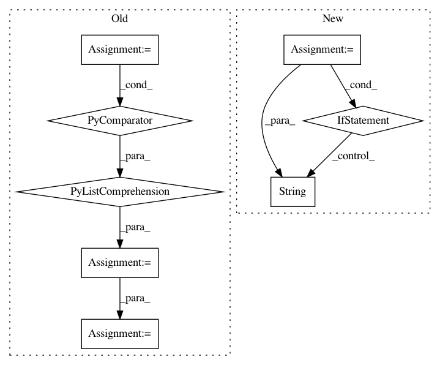

5cfa1934e4a2157d07ef534e1033a3f0e5bc1082,python/ray/experimental/client/server/server.py,RayletServicer,WaitObject,#RayletServicer#Any#Any#,112
Before Change
return objectref
def WaitObject(self, request, context=None) -> ray_client_pb2.WaitResponse:
object_refs = [cloudpickle.loads(o) for o in request.object_handles]
num_returns = request.num_returns
timeout = request.timeout
object_refs_ids = []
for object_ref in object_refs:
if object_ref.binary() not in self.object_refs:
return ray_client_pb2.WaitResponse(valid=False)
object_refs_ids.append(self.object_refs[object_ref.binary()])
try:
ready_object_refs, remaining_object_refs = ray.wait(
object_refs_ids,
num_returns=num_returns,
After Change
def WaitObject(self, request, context=None) -> ray_client_pb2.WaitResponse:
object_refs = []
for id in request.object_ids:
if id not in self.object_refs[request.client_id]:
raise Exception(
"Asking for a ref not associated with this client: %s" %
str(id))
object_refs.append(self.object_refs[request.client_id][id])
num_returns = request.num_returns
timeout = request.timeout
try:
ready_object_refs, remaining_object_refs = ray.wait(
In pattern: SUPERPATTERN
Frequency: 3
Non-data size: 8
Instances
Project Name: ray-project/ray
Commit Name: 5cfa1934e4a2157d07ef534e1033a3f0e5bc1082
Time: 2020-12-18
Author: me@barakmich.com
File Name: python/ray/experimental/client/server/server.py
Class Name: RayletServicer
Method Name: WaitObject
Project Name: deepmipt/DeepPavlov
Commit Name: bc763baf9ea16e6a01c3803f9d180baface0a943
Time: 2018-03-14
Author: bushkov@phystech.edu
File Name: setup.py
Class Name:
Method Name: read_requirements
Project Name: deepmipt/DeepPavlov
Commit Name: 284c2d94c6b50f7f1f3091d0c4bec62e7f54dd73
Time: 2018-03-15
Author: dilyara.rimovna@gmail.com
File Name: setup.py
Class Name:
Method Name: read_requirements